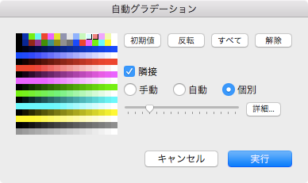

範囲選択
範囲選択
範囲選択を行うことにより、次の編集が行えるようになります。
- コピー、ペースト、削除
- （同一画像内での）ドラッグによる移動、複写
- 変倍（拡大、縮小）
- 回転（任意角回転）
- 上下反転、左右反転
- カラーパターンの登録
- 自動グラデーション
- 色置換
- テクスチャ
- 切り抜き
任意領域と矩形領域
 （
（ ）の場合、形状は矩形（長方形ないし正方形）で範囲選択できます。
）の場合、形状は矩形（長方形ないし正方形）で範囲選択できます。
（ ）の場合、形状は任意で範囲選択できます。
）の場合、形状は任意で範囲選択できます。
塗り選択
キーを押していると、主ボタンプレスした座標と同じ色であり、隣り合う画素を選択範囲とします。
キーとキーを押していると、塗りの選択範囲を拡張します。
キーとキーを押していると、塗りの選択範囲を削減します。
また、キーとキーを押していると、選択色を境界色として、境界領域内の画素を選択範囲とします。
キーとキーとキーを押していると、境界色を指定した塗りの選択範囲を拡張します。
キーとキーとキーを押していると、境界色を指定した塗りの選択範囲を削減します。
移動と複写と削除
選択範囲内で主ボタンをドラッグすると範囲内の画像を移動します。
主ボタンをリリースする際にキーを押している（あるいは副ボタンを押している）と複写となります。
メニューのを選択すると、選択中の色（色ないしカラーパターン）とタイルパターン、および選択中の描画機能で範囲内を塗りつぶします（ただし、濃度と均一濃度は形状の塗りつぶしの場合と異なり、ともに同じ結果となります）。
ハンドルによる編集
 の場合、ハンドルは出現せず変倍・回転は行えません。
の場合、ハンドルは出現せず変倍・回転は行えません。
 の場合、ハンドルは出現し変倍・回転を行えます。このとき、四隅と四辺のハンドルは次の機能が割り当てられています。
の場合、ハンドルは出現し変倍・回転を行えます。このとき、四隅と四辺のハンドルは次の機能が割り当てられています。
- 四隅：変倍
- 四辺：回転
自動グラデーション
自動グラデーションは、隣り合う２色の間の境界をタイルパターンによるグラデーションでぼかす（混ぜ合わせる）機能です。

メニューのを選択して自動グラデーション設定パネルを開きます。

色見本の部分を主ボタン（左ボタン）で選択して、対象となる色を選択します。
スライダーはグラデーションの深さ（太さ）を選択するもので、１から１６までの１６段階が指定可能です（ドット数で表すと８ドットから１２８ドットです）。
手動を選択している場合、スライダーで指定したサイズで描画します。
自動を選択している場合、スライダーは使用不可の状態となり、対象となる色のドット数（水平あるいは垂直の連続数）で深さ（太さ）が自動で算出されます。
個別を選択している場合、色の組み合わせごとにサイズの指定が可能となります。また、この個別サイズの初期値はスライダーで指定したサイズを最大値とし、且つ選択範囲内の対象色の画素数に応じて分配した値となります。この個別サイズはをクリックすることにより開くシートにて、その設定値を確認・編集できます。

隣接のチェックをチェック済みにすると、画素の値が隣接している場合に自動グラデーションをかけます。そのため、色見本での選択色が離散的だと、自動グラデーションは実行できません。
色見本の選択の初期値は次の条件を満たす色としています。
- 選択範囲内にある色である。
- マスク（上塗りを禁止）ではない。
- 非使用（吸い取りを禁止）でもない。
- 色要素が黒（赤（R）と緑（G）と青（B）の値が０）でもない。
色置換
選択範囲内の画素を別の画素に置き換えます。
メニューのを選択して色置換設定パネルを開きます。

主ボタン（左ボタン）で置換元、副ボタン（右ボタン）で置換先を選択して登録し、色を複写します。
隣接した色を連続して対象色とする場合は、その連続数をリスト下の範囲で指定します。
テクスチャ
現在のレイヤーと直下のレイヤーを混ぜ合わせます。
現在のレイヤーは濃淡を表現し、直下のレイヤーは貼り付けるパターン（模様）を表現します。
混ぜ合わせた結果は現在のレイヤーに反映します。
図示すると次のようになります（画像をクリックすると拡大表示します）。

{kind=link}
{kind=link}
実行するには、メニューのを選択してテクスチャ設定パネルを開きます。

テクスチャ基本色は、貼り付けるパターンで使用している色を指定します（直下のレイヤーで使用している色を指定します）。この色の範囲は垂直範囲のエディットボックスで指定できます。
濃淡色は、濃淡で使用している色を指定します（現在のレイヤーで指定している色を指定します）。この色の範囲は水平範囲のエディットボックスで指定できます。
置換色は、混ぜ合わせた結果で使用する色を指定します。
切り抜き
矩形の選択範囲で画像を切り抜きます（任意形状であったとしても、その形状を囲む矩形で切り抜きます）。